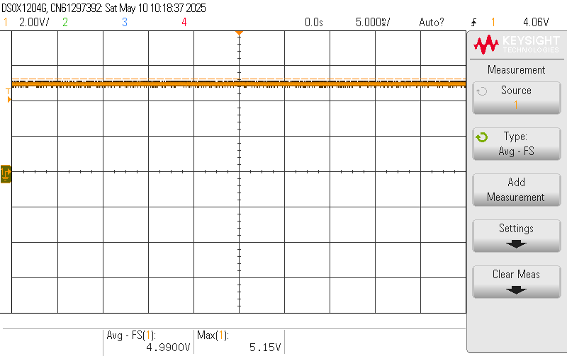
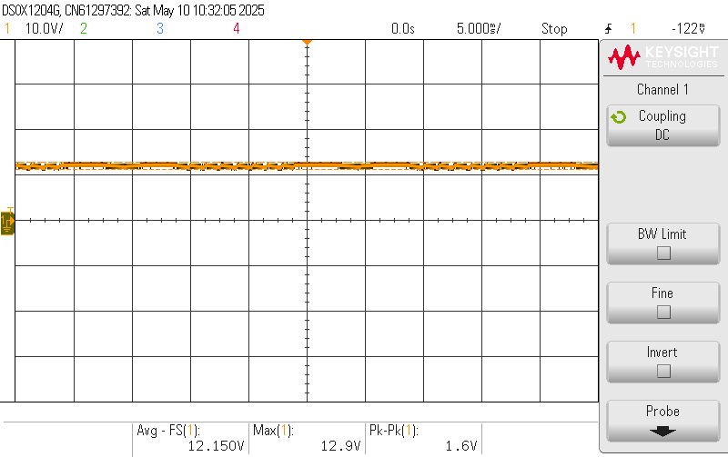
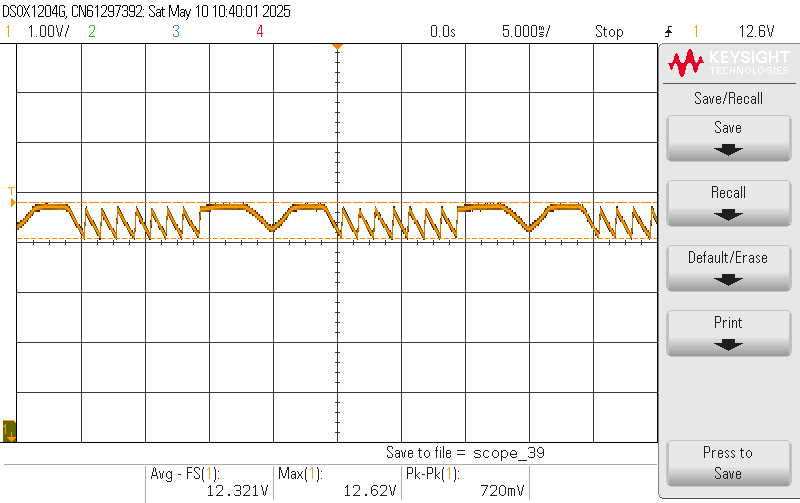
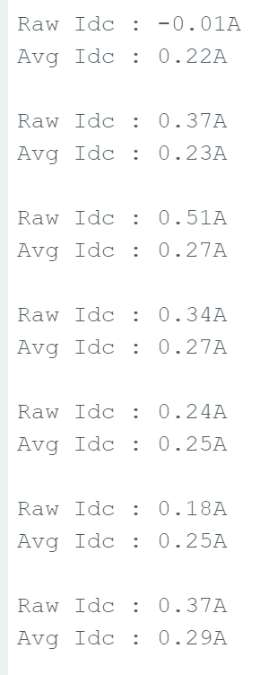
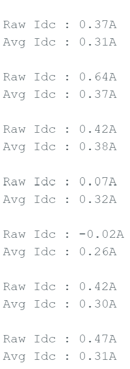

Experimentation
The experimentation is predicated on the sequential testing of the fully populated Atinverter V2 PCB as well as its integration with various software modules to evaluate and diagnose system-level functionality.
Standard PCB assembly practices were observed throughout the process, including component orientation checks, solder joint inspections, thorough visual examination, and continuity testing.
To successfully validate the operation of the Atinverter V2 device, verification of the following core subsystems is required:
- 5V Buck and 12V Boost Power Supplies
- ATMEGA328P Bootloaded Status
- PWM Inversion
- DC Voltage and Current Sensing
- AC Voltage and Current Sensing
In the next few sections, each subsystem is reported on their verification status, both from a hardware and software functionality standpoint.
Workbenches
In order to conduct proper testing, a reliable work bench was operated to conduct the various
5V Buck and 12V Boost Power Supplies



ATMEGA328P Bootloaded Status
- Verification of `Blink.ino’ software and ATMEGA328P bootloaded state

ATMEGA328P is functional and performs LED blinking as expected from the ‘Blink.ino’ program
PWM Inversion
PWM Generation
- Verification of `50Hz_PWM_Inverter.ino’ and ‘60Hz_PWM_Inverter.ino software and ATMEGA328P bootloaded state


Gate Driver


H-Bridge and LC Filter


Sensing Networks
The fundamental frequency of operation (50Hz or 60Hz) should not significantly affect the input current reading voltage and current sensing values for 12V is reflec
DC Voltage Sensing


DC Current Sensing


AC Voltage Sensing